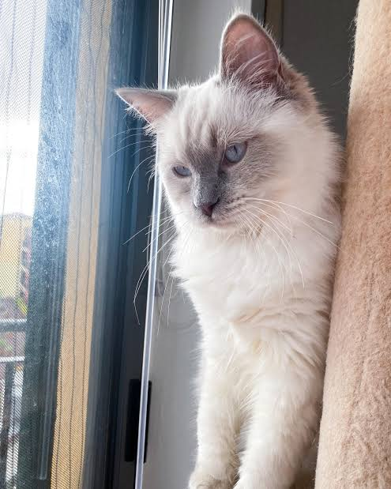

Cloud randomly walked into the house while I was at home sick from school. Cloud ate and walked around the house with very little hesitation, we then got a seperate food bowl for him and he has come back basically daily for six months.